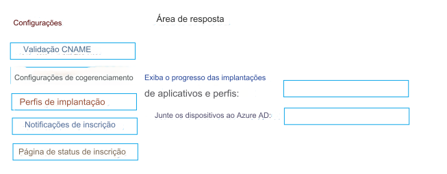

162- ARRASTE E SOLTE
Você tem uma assinatura do Microsoft 365 que usa o Microsoft Intune.
Você planeja usar o Windows Autopilot para provisionar 25 dispositivos Windows 11.
Você precisa atender aos seguintes requisitos durante o provisionamento do dispositivo:
• Exibir o progresso das implantações de aplicativos e perfis.
• Junte os dispositivos ao Azure AD.
O que você deve configurar para atender a cada requisito? Para responder, arraste as configurações apropriadas para os requisitos
corretos. Cada configuração pode ser usada uma vez, mais de uma vez ou nunca ser usada. Talvez seja necessário arrastar a barra
de divisão entre os painéis ou rolar para visualizar o conteúdo.
NOTA: Cada seleção correta vale um ponto.
